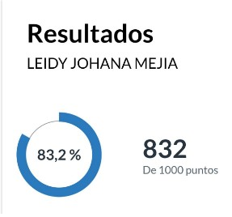
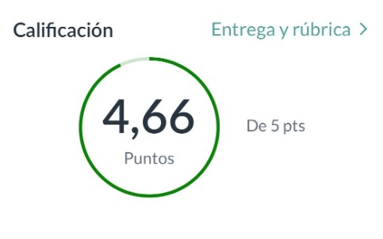
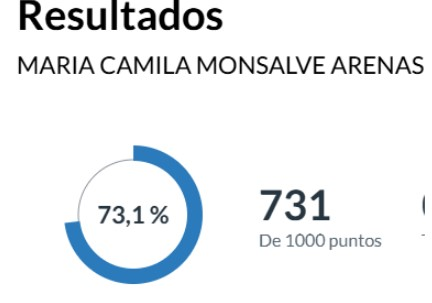

ALDEA GLOBAL 2 *Compromisos para la convivencia. *Ser asertivos y receptivos a la hora de comunicar ideas, sin menospreciar el punto de vista de los demás. *Reuniones virtuales para concertar avances en los trabajos de cada entrega. *Siempre tratar con respeto a los compañeros y si se presenta algún problema hablarlo con mucha tolerancia. *Ser empáticas en el momento de que se necesite alguna colaboración por parte de las demás integrantes. *Cada semana de manera proactiva cada integrante propondrá estrategias para desarrollar el trabajo de aplicación y así mismo se auto asignará actividades de manera equitativa. *Teniendo en cuenta las habilidades de cada integrante, se reparten las funciones para cada entrega. *Cumplir con las fechas de entrega estipuladas por el equipo, para la consolidación de todo el trabajo. Consecuencias en caso de incumplimiento. *En caso de no estar presente durante toda la semana de entregas y sustentación del trabajo, se le informará al docente del núcleo y este será quien decida qué calificación tendría la persona que no cumpla con sus actividades. *En caso de que algún integrante no participe en las actividades y no se comunique o tenga una excusa válida, se expondrá el caso con el resto de miembros del equipo, para solicitar al docente una posible expulsión del grupo. Canales de comunicación acordados. *El canal de comunicación principal para el equipo de trabajo será Whatsapp. *Meet para socializar Cronograma de reuniones según las entregas del núcleo. https://ceipa.instructure.com/calendar#view_name=month&view_start=2025-10-14 https://ceipa.instructure.com/calendar#view_name=month&view_start=2025-11-01 https://ceipa.instructure.com/calendar#view_name=month&view_start=2025-12-01 Conducta regular para la solución de conflictos *Se realizarán llamados de atención. *Se crearán espacios de diálogo donde todos nos expresemos con respeto y empatía. *Si el problema es continuo, se hablará con el docente con el fin de llegar a un acuerdo y poner fin a la situación. Análisis del test de entrada de cada integrante del equipo. Análisis del test de entrada Leidy Johana Mejia. Obtuve un porcentaje del 83,2% ya que hay algunos conceptos que no tengo muy claros pero estoy segura de que en este módulo voy a aprender al 200% porque me gustan los desafíos y estoy dispuesta comprender e investigar y aplicar todo el contexto global. ¿Qué debo mejorar? Identificar problemas: Para mí, es importante mejorar en esto, ya que las fuentes y herramientas adecuadas son esenciales. Esto me ayudará a resolver problemas de manera más eficiente.  Análisis Test de Entrada – Diana Marcela Bustamante Obtuve una calificación de 4,66 sobre 5 puntos, un resultado que refleja un alto nivel de desempeño y una excelente preparación para iniciar mi proceso académico en la universidad. Considero que este puntaje evidencia mi disciplina, responsabilidad y capacidad de análisis, así como el compromiso que tengo con mi desarrollo personal y profesional. Este resultado me motiva a continuar fortaleciendo mis competencias, mantener una actitud constante de aprendizaje y aprovechar al máximo cada oportunidad que me permita seguir creciendo como estudiante y futura profesional.  Maria Camila Monsalve Arenas En mi test de entrada obtuve una calificación de 73.1% encontrando oportunidades de mejora en mis conocimientos y queriendo aprender y perfeccionar lo que puede ser debilidad en el momento, haciendo que mi test de salida supere mi puntaje actual y pueda fácilmente sacar el 100% gracias a los conocimientos y habilidades que pueda adquirir en este módulo ya que me mi compromiso con mi crecimiento profesional es alto y espero siempre dar la milla extra para lograr grandes resultados.  Alejandra Cardona Copete No pude completar el test de entrada, pero me comprometo a demostrar que puedo dar lo mejor de mí en cada sección y tarea de este núcleo